~80% faster handling
WAREHOUSE OPERATIONS · PROCESS EXCELLENCE · DIGITALIZATION
Operate today.
Build for tomorrow.
I build reliable warehouse operations through people leadership, SOP, automation, loss prevention, cost control and cross-functional execution.
1,100 m²
Warehouse scope
8K–12K
Orders / month
End-to-end
Operations ownership

TRƯƠNG MINH CHÍ (RYAN)
Warehouse Operations &
Inventory Management
Inventory Control · Process Improvement
EXECUTIVE PROFILE
Warehouse operations professional with a manager-level system mindset.
Warehouse operations professional experienced in end-to-end execution, workforce stabilization, fulfillment, inventory control, reverse logistics, technical recovery, cost control and digital process improvement.
I turn operational problems into clear ownership, SOP, KPI, system controls and measurable business outcomes.
People Leadership
Inventory Control
Fulfillment
Reverse Logistics
SOP & KPI
Automation
TRANSFORMATION SCORECARD
Measurable management impact.
~94–100% reduction
Carrier-return leakage eliminated
Recovered value / revenue
Previously overlooked claim value
Built standards from scratch
Lower labor dependence. Lower loss. Faster flow. Recovered value. Stronger operating discipline.
OPERATING SYSTEM
End-to-end warehouse control architecture.
Physical execution supported by scripts, SOP, KPI, audit trails and management dashboards.
OP RELEASE
→
PACKING
→
OUTBOUND
→
HANDOVER
→
RETURN / RTO
→
TECH
→
RECOVERY
Order processing / packing
Carrier handover / return receipt
Inspection / recovery
Tracking validation / duplicate control
Timestamps / locks / reconciliation
Exception handling / KPI
Campaign / manpower / PO
Materials / cost / claims
Return / warranty / compliance
FLAGSHIP DIGITALIZATION PROJECT
Ryan WMS — Warehouse Operations Control System.
A self-designed warehouse operations system created from real e-commerce workflow requirements. The project translates daily warehouse pain points into structured controls, traceability, exception visibility and management reporting.
PROJECT ROLE
Process Owner · System Designer · Builder
Operations-first design, not a generic software demo
RAW ORDERS
→
PACKING
→
OUTBOUND
→
HANDOVER
→
RETURN
Follow each order through raw intake, packing and handover status.
Duplicate, cancel, not-ready and processing controls reduce operational mistakes.
Weekly ERP snapshots, stock variance monitoring, physical count and low-stock visibility.
Daily, monthly and custom-range reporting with brand/platform analysis and exception logs.

01 · CONTROL CENTER
One operating layer across warehouse workflows
Centralized access to Raw Orders, Packing, Outbound/Handover, Return Receiving, Inventory, Stock Count, Material Management and Reports.
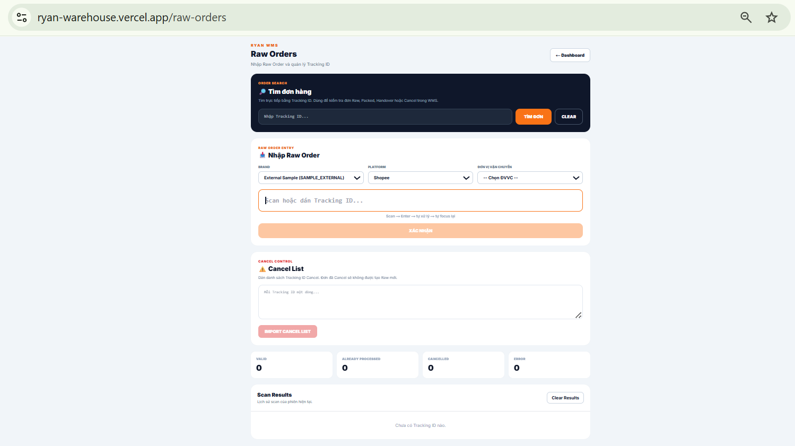
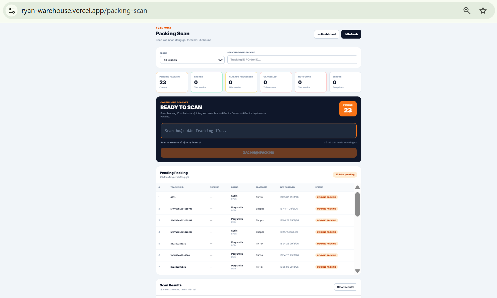
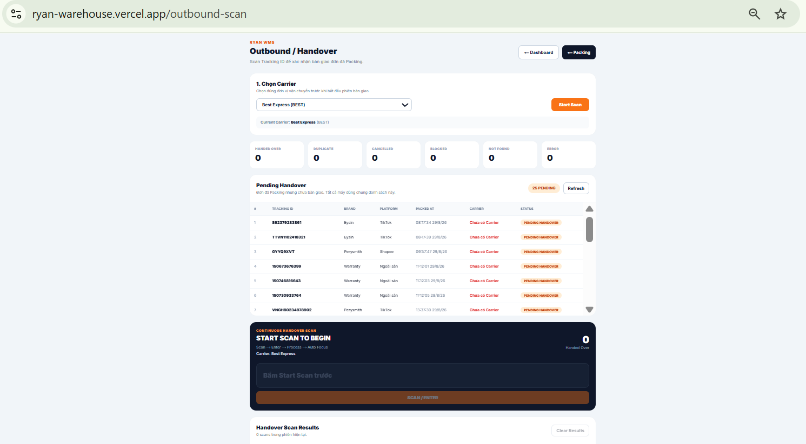
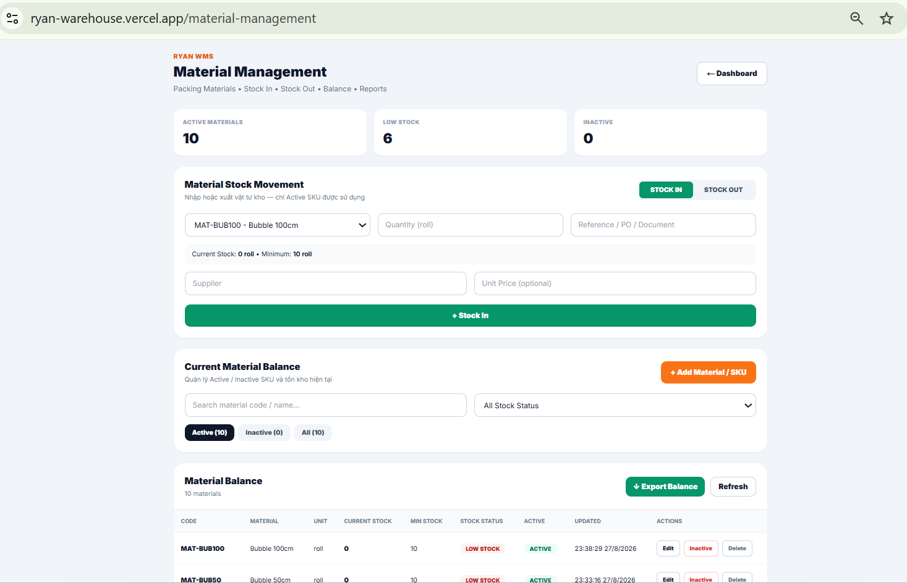
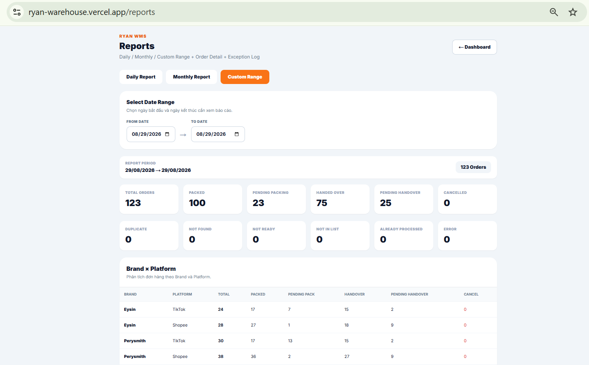
TECHNICAL IMPLEMENTATION
Next.js · TypeScript · Supabase · PostgreSQL ·
Authentication/RLS · Vercel
Design principle: technology supports the operation. The system was built around actual warehouse control points rather than adding software for its own sake.
SELECTED CASE STUDIES
From operational problem to business result.

01
Protecting FHR during peak sales
Forecast workload, prepack volume, manpower allocation and carrier handover requirements. When packing was behind plan, coordinated carrier pre-scanning and handover preparation while packing continued in parallel.
2,215 / 2,215 prepack · 0 pending

02
Return reconciliation & carrier accountability
Built tracking-level reconciliation between platform return records and physical warehouse receipts, with carrier follow-up and aging exceptions.
Return leakage: ~50% → 0%

03
Materials, supplier & finance control
Forecast packing-material needs, monitor minimum stock, coordinate supplier pricing and availability, and maintain cost visibility with local and China Finance.
Supply continuity + cost visibility
MANAGEMENT CONTROL TOWER
Dashboards built around management questions.
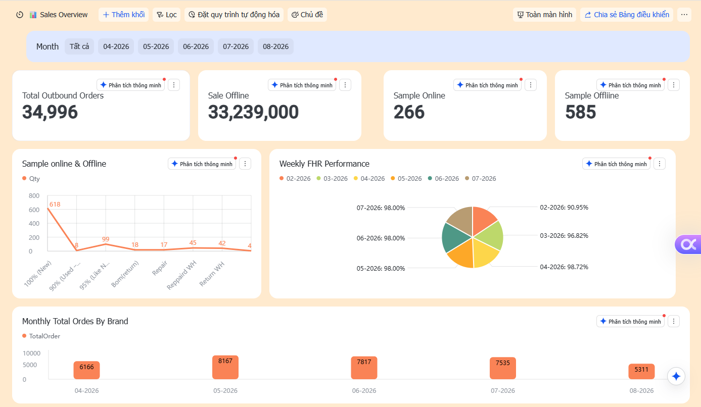
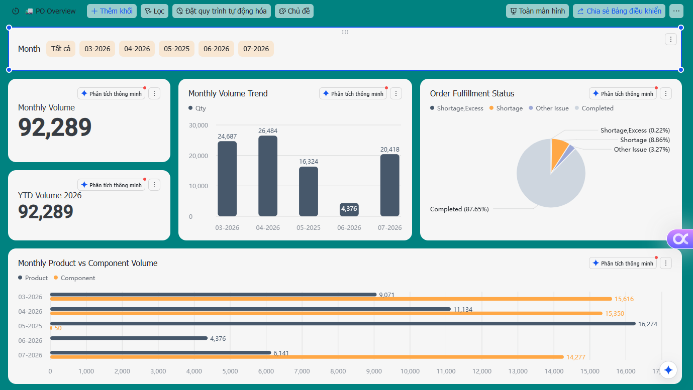
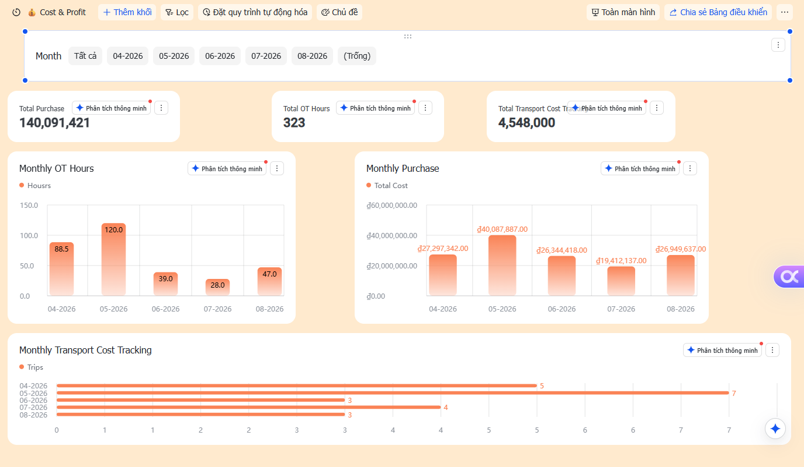
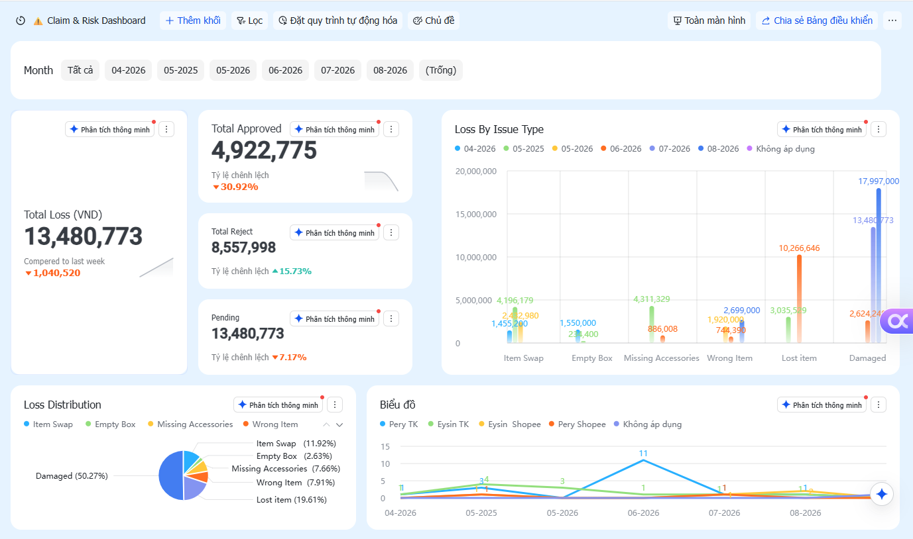
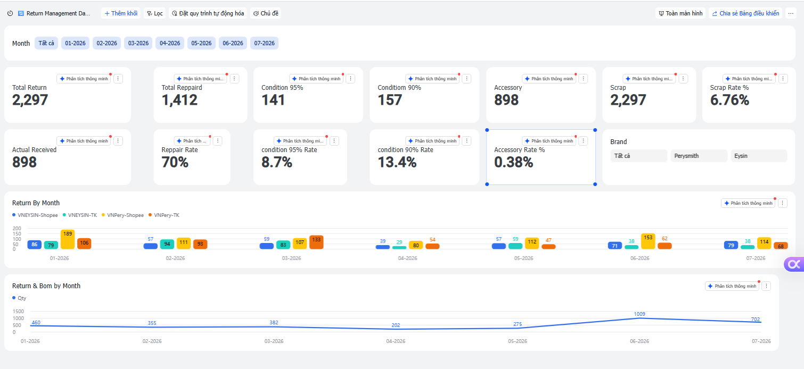
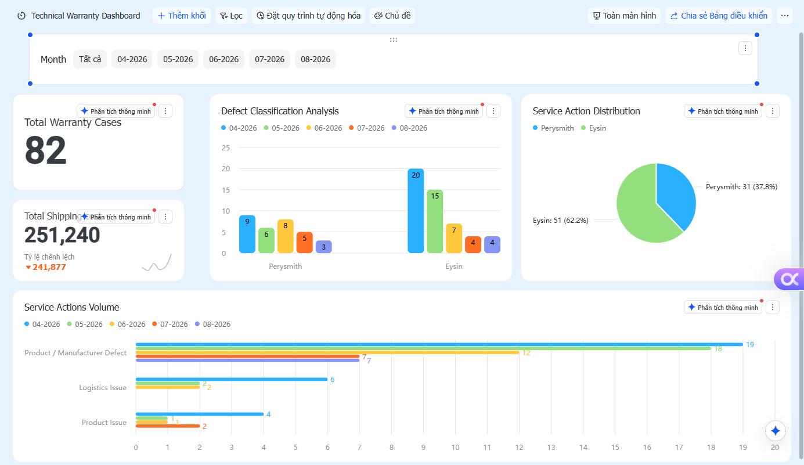
CROSS-FUNCTIONAL LEADERSHIP
Warehouse as a business partner.
OP + CS
Return, warranty, order issues,
customer experience
China Team
Inbound shipments, supply and product issues
Technical + Partners
Technical issues and urgent sale-day recovery
Finance / Accounting
Inventory, cost, claims and expenses
Carriers
Pickup, handover, returns and contingency
Suppliers
Material price, availability and continuity
CAREER JOURNEY
Operations experience built step by step.
B.B.A. — International Business
University of Finance – Marketing
Regional Operations Supervisor — GHTK
Multi-site KPI, resource coordination, incident handling and branch management support.
Warehouse Leader — Kingden
End-to-end warehouse ownership, SOP/KPI, automation, cost, return, technical and BI.
WAREHOUSE MANAGER VALUE
People. Process. Execution.
Business. Control. Digital.
Available to demonstrate sanitized warehouse systems and dashboards during interview.